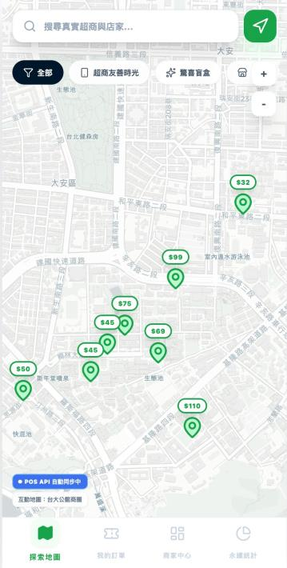
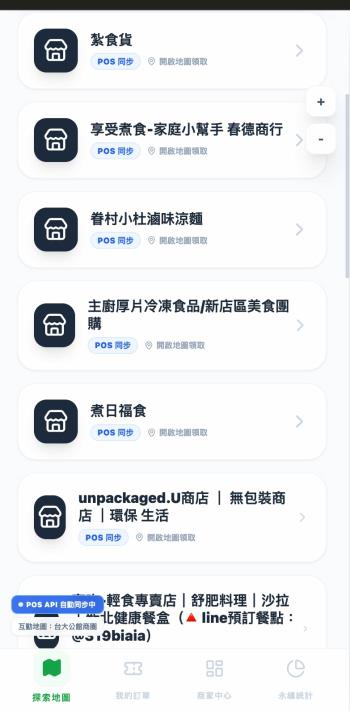
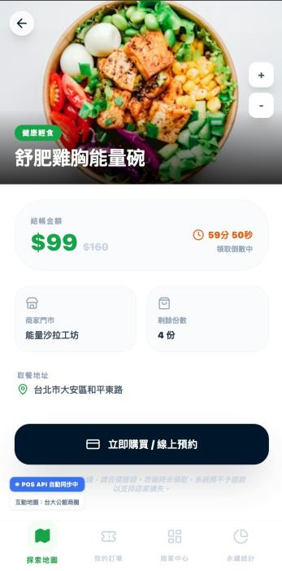
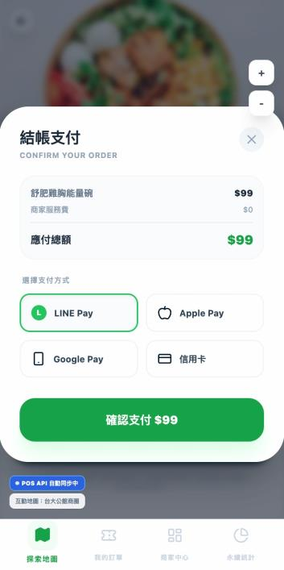
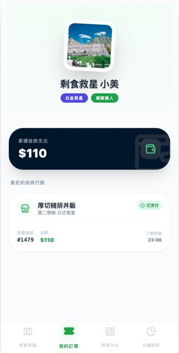
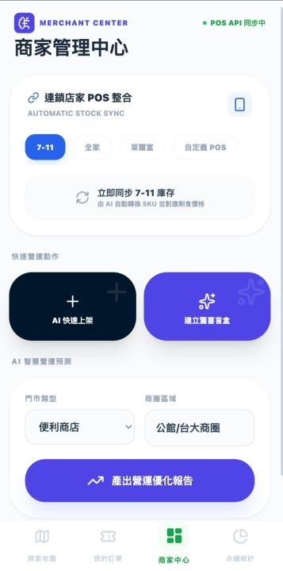

內容補充
執行上，我把問題拆成使用者端、供給端與平台端三個視角，同時整理行為誘因、運作流程與價值衡量方式，讓永續主題更接近實際產品提案。
- 探索地圖與店家列表
- AI 備料預測
- ESG 量化看板
永續 · 2026
以 AI 剩食即時媒合平台為主軸，結合探索地圖、店家列表、支付預約與 ESG 量化看板，回應剩食與小店行銷效率問題。
以 AI 剩食即時媒合平台為主軸，結合探索地圖、店家列表、支付預約與 ESG 量化看板，回應剩食與小店行銷效率問題。 這頁整理的是我在這個題目裡如何定義問題、形成提案、安排內容架構，以及最後想讓外部看見的核心價值。
執行上，我把問題拆成使用者端、供給端與平台端三個視角，同時整理行為誘因、運作流程與價值衡量方式，讓永續主題更接近實際產品提案。
這個作品的目標是回應台灣大量剩食與小型店家行銷效率不足的問題，讓剩餘餐點能被即時媒合，而不是在營業結束前被浪費掉。
發想來自我對惜食平台的觀察：真正卡住的不只是有沒有商品，而是資訊、時間與信任成本，因此我把設計重點放在「快速找到、快速理解、快速完成交易」。
核心設計由使用者端與店家端並行構成：使用者端用即時地圖、商品詳情與支付預約縮短決策時間；店家端則透過 AI 備料預測與管理介面提升庫存與曝光效率。
執行上，我把問題拆成使用者端、供給端與平台端三個視角，同時整理行為誘因、運作流程與價值衡量方式，讓永續主題更接近實際產品提案。
這份作品的內容亮點主要集中在 探索地圖與店家列表、AI 備料預測、ESG 量化看板，也因此能更完整地呈現我如何從主題理解一路走到企劃、設計或提案表達。
成果上，這個作品形成一套完整的永續產品敘事，從問題定義、介面規劃到 ESG 價值表達都更接近真正可展示的產品提案。
這個提案把 ResQfood 定位成一個兼顧使用者便利、店家營運效率與永續價值溝通的剩食平台。我在介面上特別強調「快速理解商品、快速完成預約、快速看見自己產生的影響」，希望把惜食從理念變成日常可持續使用的服務。

首頁用地圖建立附近可用資源的即時感，讓使用者一打開就能看到周邊店家、剩食種類與可預約時段，降低搜尋成本。

列表模式補足地圖不容易比較的資訊層次，讓使用者快速比對店家距離、折扣幅度、餐點數量與評價狀態。

聚焦在餐點內容、可取貨時間與數量限制，把常見的不確定感提前說清楚，幫助使用者快速建立信任並完成選擇。

預約、付款與取貨流程整合在同一條路徑，避免切換頁面流失，也讓店家端更容易掌握預約數量。

個人頁把減碳、惜食次數與參與紀錄整理成可回顧的成果，讓永續不只是一次性購買，而是能被累積、被看見的行動。

整合庫存管理、曝光安排與 AI 備料預測，讓 ResQfood 不只是消費者平台，也是幫小型店家提升營運效率的後台工具。